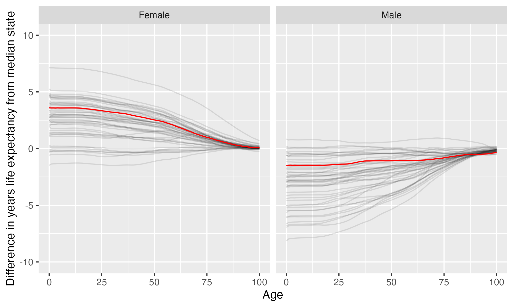

University of Wisconsin-Madison
University of Wisconsin-Madison is located in Madison, Wisconsin. It is a public, 4-year or above institution.
From Wikipedia: The University of Wisconsin–Madison (University of Wisconsin, Wisconsin, UW, UW–Madison, or simply Madison) is a public land-grant research university in Madison, Wisconsin. Founded when Wisconsin achieved statehood in 1848, UW–Madison is the official state university of Wisconsin and the flagship campus of the University of Wisconsin System. It was the first public university established in Wisconsin and remains the oldest and largest public university in the state. It became a land-grant institution in 1866. The 933-acre (378 ha) main campus, located on the shores of Lake Mendota, includes four National Historic Landmarks. The university also owns and operates the 1,200-acre (486 ha) University of Wisconsin–Madison Arboretum, located 4 miles (6.4 km) south of the main campus, which is also a National Historic Landmark.
Overview of institution
Institution kind: Doctoral Universities: Very High Research Activity
Undergrad program: Balanced arts & sciences/professions, high graduate coexistence
Graduate program: Research Doctoral: Comprehensive programs, with medical/veterinary school
Enrollment profile: Majority undergraduate (see more details below)
Average net price for undergrads on financial aid: $13,484 (This is 100% the average cost of Harvard).
Average net price for families with $30K-48K income: $4,697 (This is $3,301 more expensive than what Harvard costs for equivalent students).
Actual price for your family: Go here to see what your family may be asked to pay. It can be MUCH lower than the average price but also higher for some.
Size and setting: Four-year, large, primarily residential
In state percentage: 44.6% of first year students come from Wisconsin
In US percentage: 90.4% of first year students come from the US
Graduation rate (within 6 years) for students seeking a Bachelors: 89.2% (this is what is usually reported as “graduation rate”)
Graduation rate (within 4 years) for students seeking a Bachelors: 69.3%
Percent of students seeking a Bachelors who transfer out of this institution: 12.3%
Student to tenure-stream faculty ratio: 14.8 (undergrads to tenure-stream faculty) [Tenure explained]
Student to faculty ratio: 8.1 (undergrads to all faculty)
Degrees offered: Certificate of less than 1 year, Certificate of at least 12 weeks but less than 1 year, Certificate of at least 1 year but less than 2 years, Bachelor’s degree, Postbaccalaureate certificate, Master’s degree, Post master’s certificate, Doctor’s degree: research scholarship, Doctor’s degree: professional practice
Schedule: Semester
Institution provides on campus housing: Yes
Dorm capacity: There are enough dorm beds for 9226 students
Freshmen required to live on campus: No
Meal plan: Yes, number of meals per week can vary
Covid vaccination requirement for students: This institution was never reported as requiring covid vaccination for students (based on info from here)
Covid vaccination requirement for faculty/staff: At some point during the pandemic (this may have changed), this institution required faculty and/or staff to be vaccinated against covid (based on info from here)
Advanced placement (AP) credits used: Yes
Disabilities: 8 percent of undergrads are registered as having disabilities.
Overview of location
- Abortion in this state: Restrictive (based on https://states.guttmacher.org/policies/ as of May 10, 2023)
- Gun law stringency: C- (higher grade = more stringent)
- State rep support for contraception: 37.5% of US reps from this state voted in favor of legal protections for contraception.
- State rep support for recognizing same-sex and interracial marriage: 50% of US reps from this state voted in favor of requiring states to recognize same-sex and interracial marriages performed in other states
- Anti-trans legislative risk: Low risk (based on Erin Reed’s work, as of June 25, 2023)
- Ecological region: Upper Midwest forest-savanna transition
- Biome: Temperate Broadleaf & Mixed Forests
- Distance to mountains: 521.2 miles to Boston Mountains
- Climate: See overview at WeatherSpark
Similar institutions
This is using information about school size, acceptance rate, yield rate, graduation rate, cost, athletic conference, and similar metrics, but it can miss important axes of similarity (for example, culinary versus hair styling schools).
Map
Enrollment
| University of Wisconsin-Madison | Change over ≤ 11 years | Trend | Big Ten Conference | Doctoral Universities: Very High Research Activity | |
|---|---|---|---|---|---|
| Undergrads (full time) | 32,071 (2021) |

|
↑ 314 per year |
||
| Undergrads (part time) | 2,490 (2021) |

|
|||
| Grad students (full time) | 10,262 (2021) |

|
|||
| Grad students (part time) | 2,193 (2021) |

|
|||
| Admission rate (undergrads) | 60% (2021) |

|
|||
| Yield rate (percent of applicants offered undergraduate admission who accept) | 26% (2021) |

|
✪✪✪✪ Better (higher) than 62% |
✪✪✪ Better (higher) than 47% |
|
| Graduation rate (bachelors in 6 years) | 89% (2021) |

|
✪✪✪✪✪ Better (higher) than 85% |
✪✪✪✪ Better (higher) than 76% |
|
| Transfer out rate (bachelors) | 12% (2011) |

|
✪✪✪✪ Better (lower) than 80% |
✪✪✪ Better (lower) than 59% |
Student financing
At many universities, almost no students pay the listed tuition and fees (“sticker price”): instead, their financial aid package lowers this dramatically, but how much students pay can vary substantially based on family income and other factors. The tuition below is the average across many students receiving aid: your family may be asked to pay less or more than this.
| University of Wisconsin-Madison | Change over ≤ 11 years | Trend | Big Ten Conference | Doctoral Universities: Very High Research Activity | |
|---|---|---|---|---|---|
| Average net price (for students awarded aid) | $13,484 (2020) |

|
↓ -$241 per year |
✪✪✪✪ Better (lower) than 77% |
✪✪✪✪✪ Better (lower) than 83% |
| Undergrads getting federal aid | 26% (2021) |

|
✪✪ Better (higher) than 31% |
✪✪ Better (higher) than 31% |
|
| Undergrads getting any aid | 64% (2021) |

|
✪ Better (higher) than 0% |
✪ Better (higher) than 16% |
|
| Undergrads getting Pell grants | 17% (2021) |

|
✪✪ Better (higher) than 31% |
✪✪ Better (higher) than 25% |
Teaching
| University of Wisconsin-Madison | Change over ≤ 11 years | Trend | Big Ten Conference | Doctoral Universities: Very High Research Activity | |
|---|---|---|---|---|---|
| Undergrads per tenure track instructor (lower is better) | 15 (2020) |

|
↑ 0.1 per year |
✪✪✪✪✪ Better (lower) than 83% |
✪✪✪✪ Better (lower) than 69% |
| Undergrads per instructor (lower is better) | 8.1 (2020) |

|
✪✪✪✪✪ Better (lower) than 92% |
✪✪✪✪ Better (lower) than 74% |
|
| Total instructors | 3,716 (2020) |

|
↑ 115 per year |
||
| Tenure track instructors | 2,025 (2020) |

|
|||
| Non-tenure track instructors | 1,691 (2020) |

|
↑ 116 per year |
Student details
| University of Wisconsin-Madison | Change over ≤ 11 years | |
|---|---|---|
| Dorm capacity | 9,226 (2021) |

|
| Percent of undergrads with registered disabilities (≤3 is rounded up to 3) | 8% (2021) |

|
Institution finances
| University of Wisconsin-Madison | Change over ≤ 11 years | Trend | Big Ten Conference | Doctoral Universities: Very High Research Activity | |
|---|---|---|---|---|---|
| Revenue from tution and fees | 21% (2021) |

|
✪✪ Better (lower) than 38% |
✪✪✪ Better (lower) than 57% |
|
| Revenue minus expenses | $356 M (2021) |

|
✪✪ Better (higher) than 31% |
✪✪✪ Better (higher) than 60% |
|
| Revenue | $3.5 B (2021) |

|
↑ $85 M per year |
||
| Expenses | $3.1 B (2021) |

|
↑ $93 M per year |
||
| Assets | $5.8 B (2021) |

|
↑ $105 M per year |
✪✪ Better (higher) than 31% |
✪✪✪✪ Better (higher) than 67% |
Graduation rates
Graduation rates for bachelor’s degrees within 150% of normal time (6 years for a 4-year degree). Note that this uses US federal demographic data: it only has two genders and a specified set of ethnicities and races. For groups with small numbers, the graduation rate may be highly variable year to year (do all three people in this group graduate this year or just two of three, for example).
| University of Wisconsin-Madison | Change over ≤ 11 years | Big Ten Conference | Doctoral Universities: Very High Research Activity | |
|---|---|---|---|---|
| Total | 89% (2021) |

|
✪✪✪✪✪ Better (higher) than 85% |
✪✪✪✪ Better (higher) than 76% |
| Men | 87% (2021) |

|
✪✪✪✪✪ Better (higher) than 85% |
✪✪✪✪ Better (higher) than 76% |
| Women | 91% (2021) |

|
✪✪✪✪✪ Better (higher) than 85% |
✪✪✪✪ Better (higher) than 76% |
| American Indian or Alaska Native men | 38% (2021) |

|
✪ Better (higher) than 15% |
✪✪ Better (higher) than 25% |
| American Indian or Alaska Native women | 80% (2021) |

|
✪✪✪✪ Better (higher) than 62% |
✪✪✪✪ Better (higher) than 61% |
| Asian men | 82% (2021) |

|
✪✪ Better (higher) than 38% |
✪✪✪ Better (higher) than 54% |
| Asian women | 90% (2021) |

|
✪✪✪✪ Better (higher) than 62% |
✪✪✪✪ Better (higher) than 63% |
| Black or African American men | 72% (2021) |

|
✪✪✪✪ Better (higher) than 77% |
✪✪✪✪ Better (higher) than 68% |
| Black or African American women | 88% (2021) |

|
✪✪✪✪✪ Better (higher) than 85% |
✪✪✪✪ Better (higher) than 78% |
| Hispanic men | 85% (2021) |

|
✪✪✪✪ Better (higher) than 77% |
✪✪✪✪ Better (higher) than 77% |
| Hispanic women | 86% (2021) |

|
✪✪✪✪ Better (higher) than 69% |
✪✪✪✪ Better (higher) than 68% |
| Native Hawaiian or other Pacific Islander men | 80% (2021) |

|
✪✪✪✪ Better (higher) than 70% |
✪✪✪✪ Better (higher) than 64% |
| Native Hawaiian or other Pacific Islander women | 100% (2021) |

|
✪✪✪✪✪ Better (higher) than 100% |
✪✪✪✪✪ Better (higher) than 100% |
| White men | 89% (2021) |

|
✪✪✪✪✪ Better (higher) than 85% |
✪✪✪✪ Better (higher) than 77% |
| White women | 91% (2021) |

|
✪✪✪✪✪ Better (higher) than 85% |
✪✪✪✪ Better (higher) than 78% |
| Two or more races men | 79% (2021) |

|
✪✪✪ Better (higher) than 54% |
✪✪✪✪ Better (higher) than 61% |
| Two or more races women | 91% (2021) |

|
✪✪✪✪✪ Better (higher) than 85% |
✪✪✪✪ Better (higher) than 74% |
| Nonresident alien men | 85% (2021) |

|
✪✪✪✪ Better (higher) than 77% |
✪✪✪✪ Better (higher) than 76% |
| Nonresident alien women | 94% (2021) |

|
✪✪✪✪✪ Better (higher) than 92% |
✪✪✪✪✪ Better (higher) than 87% |
Freshmen demographics
Demographic data for first time degree-seeking students. Note that this uses US federal demographic data: it only has two genders and a specified set of ethnicities and races.
| University of Wisconsin-Madison | Change over ≤ 11 years | |
|---|---|---|
| Men (percent freshmen) | 45% (2021) |

|
| Women (percent freshmen) | 55% (2021) |

|
| American Indian or Alaska Native men (percent freshmen) | 0.1% (2021) |

|
| American Indian or Alaska Native women (percent freshmen) | 0.2% (2021) |

|
| Asian men (percent freshmen) | 4.9% (2021) |

|
| Asian women (percent freshmen) | 4.8% (2021) |

|
| Black or African American men (percent freshmen) | 1.0% (2021) |

|
| Black or African American women (percent freshmen) | 1.2% (2021) |

|
| Hispanic men (percent freshmen) | 3.4% (2021) |

|
| Hispanic women (percent freshmen) | 4.7% (2021) |

|
| Native Hawaiian or Other Pacific Islander men (percent freshmen) | 0.0% (2021) |

|
| Native Hawaiian or Other Pacific Islander women (percent freshmen) | 0.0% (2021) |

|
| White men (percent freshmen) | 25% (2021) |

|
| White women (percent freshmen) | 36% (2021) |

|
| Two or more races men (percent freshmen) | 2.0% (2021) |

|
| Two or more races women (percent freshmen) | 2.7% (2021) |

|
| Race ethnicity unknown men (percent freshmen) | 2.1% (2021) |

|
| Race ethnicity unknown women (percent freshmen) | 1.7% (2021) |

|
| Nonresident alien men (percent freshmen) | 6.1% (2021) |

|
| Nonresident alien women (percent freshmen) | 3.5% (2021) |

|
Freshmen geography
| University of Wisconsin-Madison | Change over ≤ 11 years | |
|---|---|---|
| In state | 45% (2021) |

|
| US | 90% (2021) |

|
| Not reported | 0% (2021) |

|
Tenure track faculty
Tenure track faculty are those who are eligible for tenure. This includes both pre-tenure and tenured faculty. Once faculty get tenure, they are (generally) protected from being fired for intellectual reasons, helping to ensure their freedom in teaching and research. They can still lose their positions for misconduct, financial problems, not fulfilling their duties, or other reasons. Note that this chart uses US federal demographic data: it only has two genders and a specified set of ethnicities and races.
| University of Wisconsin-Madison | Change over ≤ 11 years | Trend | |
|---|---|---|---|
| Total (tenure-track count) | 2,025 (2020) |

|
|
| Women (tenure-track count) | 767 (2020) |

|
↑ 13 per year |
| Men (tenure-track count) | 1,258 (2020) |

|
↓ -13 per year |
| American Indian or Alaska Native (tenure-track count) | 7 (2020) |

|
|
| Asian (tenure-track count) | 268 (2020) |

|
↑ 6.8 per year |
| Black or African American (tenure-track count) | 68 (2020) |

|
↑ 2.0 per year |
| Hispanic or Latino (tenure-track count) | 81 (2020) |

|
|
| Native Hawaiian or other Pacific Islander (tenure-track count) | 2 (2020) |

|
↑ 0.3 per year |
| White (tenure-track count) | 1,389 (2020) |

|
↓ -17 per year |
| Two or more races (tenure-track count) | 25 (2020) |

|
↑ 1.7 per year |
| Nonresident alien (tenure-track count) | 104 (2020) |

|
↑ 4.4 per year |
Non-tenure track faculty
Non-tenure track faculty are not eligible for tenure. Some are hired one semester at a time, some have multi-year contracts. They typically have a higher teaching load than tenure track faculty, leaving less time for research or other creative endeavors. They are also easier to fire than tenured faculty. Sometimes they are external experts (a noted musician, a former senator) who are hired to teach some classes without the expected permanence of a tenure-track position. Note that this chart uses US federal demographic data: it only has two genders and a specified set of ethnicities and races.
| University of Wisconsin-Madison | Change over ≤ 11 years | Trend | |
|---|---|---|---|
| Total (non-tenure-track count) | 1,691 (2020) |

|
↑ 116 per year |
| Women (non-tenure-track count) | 809 (2020) |

|
↑ 61 per year |
| Men (non-tenure-track count) | 882 (2020) |

|
↑ 55 per year |
| American Indian or Alaska Native (non-tenure-track count) | 3 (2020) |

|
↑ 0.3 per year |
| Asian (non-tenure-track count) | 127 (2020) |

|
↑ 10 per year |
| Black or African American (non-tenure-track count) | 35 (2020) |

|
↑ 3.1 per year |
| Hispanic or Latino (non-tenure-track count) | 47 (2020) |

|
↑ 4.2 per year |
| Native Hawaiian or other Pacific Islander (non-tenure-track count) | 1 (2020) |

|
|
| White (non-tenure-track count) | 1,255 (2020) |

|
↑ 78 per year |
| Two or more races (non-tenure-track count) | 15 (2020) |

|
↑ 1.7 per year |
| Nonresident alien (non-tenure-track count) | 50 (2020) |

|
Library facilities
| University of Wisconsin-Madison | Change over ≤ 11 years | Trend | Big Ten Conference | Doctoral Universities: Very High Research Activity | |
|---|---|---|---|---|---|
| Number of physical books | 4.7 M (2021) |

|
↓ -480,261 per year |
✪✪✪✪ Better (higher) than 77% |
✪✪✪✪✪ Better (higher) than 89% |
| Physical library circulations per students and faculty | 2.7 (2020) |

|
↓ -0.8 per year |
✪✪✪✪ Better (higher) than 67% |
✪✪✪✪ Better (higher) than 75% |
| Digital library circulations per students and faculty | 149 (2020) |

|
✪✪✪✪✪ Better (higher) than 100% |
✪✪✪✪✪ Better (higher) than 85% |
Life expectancy
This hopefully will not be relevant for potential students, but it may be for people moving to an area longer term, such as faculty and staff choosing where to live. This uses information from US National Vital Statistics Reports for 2020; like much federal data, it assumes people are male or female. For age difference from median, it is from the median state, averaging across all genders (one consequence of this is that the difference from the median life expectancy is almost always negative for men).
- Life expectancy at birth: 80.3 years women (3.6 years over the median), 75.2 years men (1.5 years below the median)
- Remaining life expectancy at age 18: 62.9 years women (3.5 years over the median), 58 years men (1.5 years below the median)
- Remaining life expectancy at age 30: 51.4 years women (3.2 years over the median), 46.8 years men (1.3 years below the median)
- Remaining life expectancy at age 45: 37.3 years women (2.7 years over the median), 33.4 years men (1.1 years below the median)
- Remaining life expectancy at age 60: 23.9 years women (2 years over the median), 20.9 years men (1.1 years below the median)
We can also plot the extra / fewer years of life expected for this state (red) compared to other states (dark gray) at each age. Again, this is normalized for the median state.

SAT scores
| University of Wisconsin-Madison | Change over ≤ 11 years | Trend | |
|---|---|---|---|
| Applicants submitting SAT | 15% (2021) |

|
|
| SAT Evidence Based Reading and Writing 25th percentile score | 640 (2021) |

|
|
| SAT Evidence Based Reading and Writing 75th percentile score | 720 (2021) |

|
|
| SAT Math 25th percentile score | 680 (2021) |

|
↑ 7.1 per year |
| SAT Math 75th percentile score | 780 (2021) |

|
↑ 5.1 per year |
ACT scores
| University of Wisconsin-Madison | Change over ≤ 11 years | Trend | |
|---|---|---|---|
| Applicants submitting ACT | 55% (2021) |

|
|
| ACT Composite 25th percentile score | 26 (2021) |

|
|
| ACT Composite 75th percentile score | 32 (2021) |

|
↑ 0.2 per year |
| ACT English 25th percentile score | 24 (2021) |

|
|
| ACT English 75th percentile score | 33 (2021) |

|
|
| ACT Math 25th percentile score | 25 (2021) |

|
|
| ACT Math 75th percentile score | 31 (2021) |

|